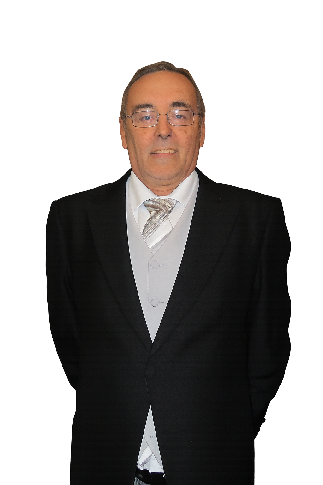

Valdestillas, 22 de noviembre de 1942 – Valladolid, 3 de enero de 2012
Director y titular del Centro San Luis de Valladolid. Dedicó su vida a la enseñanza, la gestión educativa y el liderazgo de academias privadas en Castilla y León y en España.
Nació en Valdestillas en 1942 y fue bautizado poco después. Estudió en la escuela municipal y más tarde en el Instituto "José Zorrilla" de Valladolid y en el Colegio La Inmaculada de los Hermanos Maristas. Se confirmó en 1955 y en 1961 obtuvo el título de Instructor Elemental de Educación Física. En 1962 se graduó como Maestro de Primera Enseñanza.
En 1963 asumió la dirección del Colegio San Luis de Valladolid, con apenas 20 años. En 1972 ya figuraba como director del Centro de Formación Profesional San Luis. Fue presidente de la Cooperativa Vallisoletana de Enseñanza y del Sindicato Provincial de Enseñanza. En 1981 el Ministerio de Educación reconoció oficialmente al Centro San Luis como centro de FP de Segundo Grado, con 360 plazas. Su labor consolidó el prestigio del centro en Valladolid y Castilla y León.
En 1988 fue elegido presidente de la Asociación Castellano-Leonesa de Academias Privadas y en 1989 secretario general de la Federación Española de Academias Privadas. Presidió congresos nacionales de enseñanza, recibió la primera Insignia de Oro de la ACLAE (1991) y múltiples reconocimientos por su contribución al mundo educativo.
Se casó en 1967 con María Isabel Pinto del Pozo, con quien tuvo cuatro hijos: Ana Isabel, María Felisa, Cristina y Antonio José. Acompañó a su familia en bodas y en la llegada de nietos. Fue nombrado Director Honorífico del San Luis en 2009. Falleció en Valladolid el 3 de enero de 2012, siendo enterrado en Valdestillas.